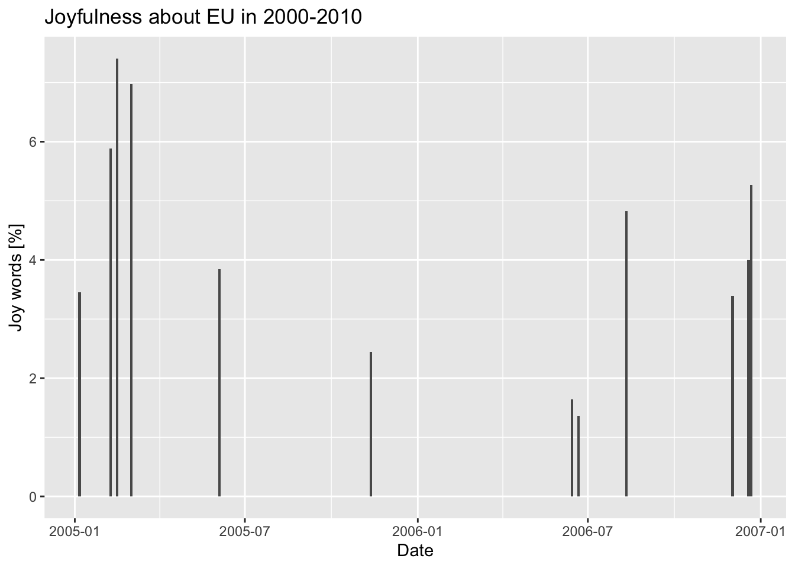
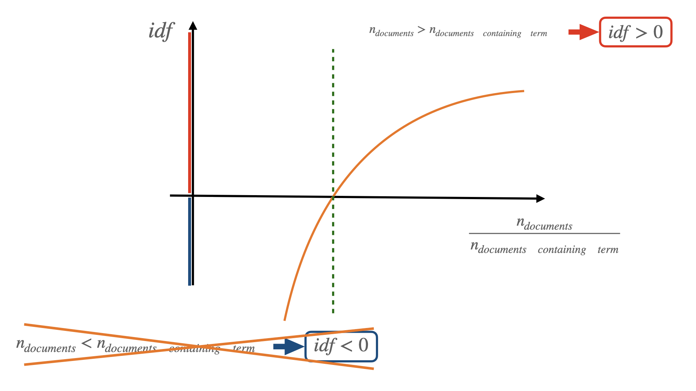
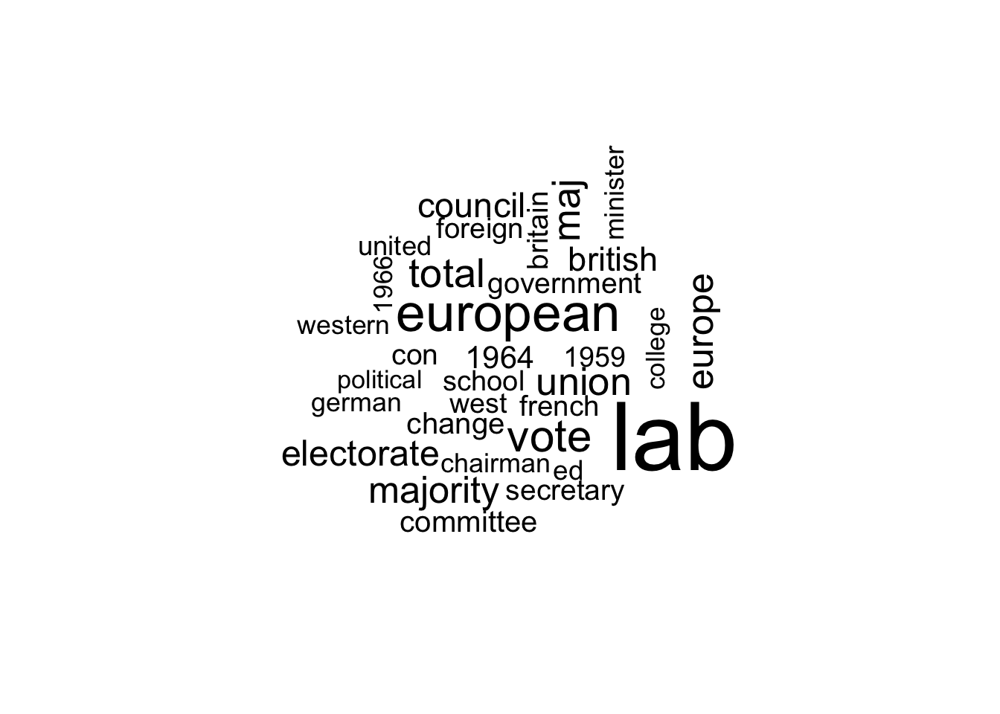
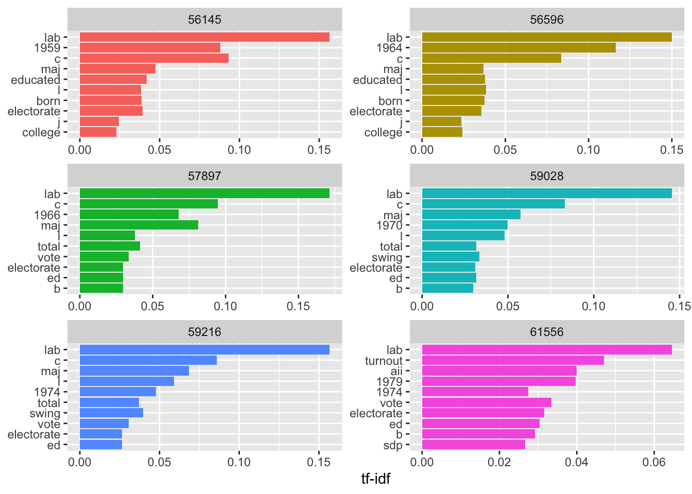
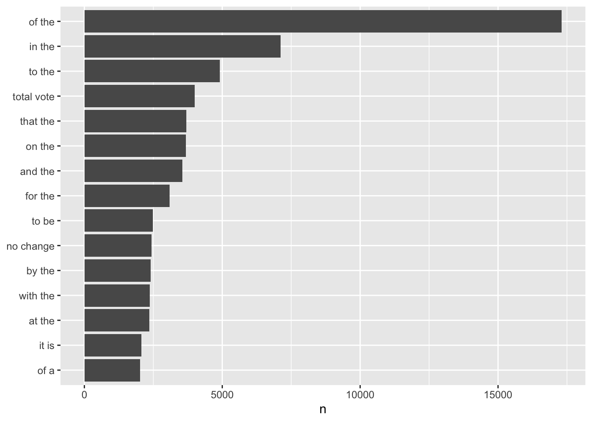

Text mining with R
Preliminaries
A few lines introduction
R DataFrames
- reading;
- selecting columns;
- merging;
- tidyverse pipelines.
Introduction
In this session we will see how to perform basic text mining with R. As the word itself suggests, text mining refers to the process of extracting information and insights from text. Text mining can be extremely useful when looking for any sort of pattern, trend, or relantionships in large volumes of text data (articles, documents, emails, social media posts, etc).
Text mining, or text analysis, can be a very challenging task as text data is often unstructured, i.e. it does not have a predefined format or structure. Furthermore, text is written in natural language and contains all the ambiguity of human subjects. Considering that everything ever written is text, the volume of data available for mining is huge and very “noisy”, as text may contain irrelevant information, typos, etc. For these reasons, text mining requires quite sophisticated techniques to be perfomed.
Thanks for us, most of these techniques have already been implemented into ready-to-use packages in different programming languanges (including R) and in this session we will go through the basic steps of a general text mining process: data collection, preprocessing, feature extraction, text classification, and visualization.
Reading data
For this session we already collected data using the web application I-analyzer. In particular we looked for “european union” over the news of the Times Digital Archive between 1945 and 2012. The data are stored in a csv file and we are going to read it into an R dataframe
library(readr)
data_file_name <- '../data/times_ocr=80_100&date=1945-01-01_2010-12-31&query=_european_union_&category=News.csv'
data_df <- read_delim(data_file_name, delim = ";", escape_double = FALSE, col_types = cols(`date-pub` = col_date(format = "%B %d, %Y")), trim_ws = TRUE)
print(colnames(data_df))[1] "author" "category" "content" "date-pub" "edition" "issue" "query"
[8] "title" "volume" read_delim is a function to read coma separated files (csv) and more into R DataFrames. In this case we obtained all the necessary arguments clicking on “Import Dataset” in R studio. In particular, we gave instructions to convert the date of publication column (“date-pub”) data format (<month_str> <day>, <year>) into an R object.
We know have all the data we need in a single R DataFrame. The information we are interested in is the “content” column. Let’s see how to extract this information.
Preprocessing
Tokenization
As we mentioned in the introduction, text data in unstructured data and it is up to us to define a data structure suitable for the kind of text analysis we want to perform. We want our data structure to be comprehensive and such that can be easely manipulated according to our needs.
The process of dividing a string of text into meaningful units is called Tokenization and these meaningful units are called tokens. A token can be a word, a phrase, a paragraphs, or a single character depending on the nature of our analysis. If, for example, we want just to exaplore how many times the name of a certain politician is mentioned in a speach, our tokens would probably be all the words of the speach and our analysis would consist on counting how many tokens are equal to the name of the politician.
To perform good text mining, not only we want to optimally tokenize our text, but also organize our tokes in a tidy way, quite litterally! For the R community, “tidy” has a very specific meaning, i.e. structuring data sets to make them consistent, easy to work, and easy to analyse. In our context it means having a single token per data frame row. R allows us to perform all these operations in few lines thanks to the library tidytext
library(tidyverse)── Attaching packages ─────────────────────────────────────── tidyverse 1.3.2 ──
✔ ggplot2 3.4.0 ✔ dplyr 1.1.0
✔ tibble 3.1.8 ✔ stringr 1.5.0
✔ tidyr 1.3.0 ✔ forcats 1.0.0
✔ purrr 1.0.1
── Conflicts ────────────────────────────────────────── tidyverse_conflicts() ──
✖ dplyr::filter() masks stats::filter()
✖ dplyr::lag() masks stats::lag()library(tidytext)
tidy_content <- data_df %>% unnest_tokens(word, content)In the line above we use the function unnest_tokens to tokenize the content of our DataFrame. First of all, we “feed” our DataFrame to the function using the workflow syntax data_df %>% unnest_tokens(...). This is equivalent to put the DataFrame as a first argument of the function, i.e. unnest_tokens(data_df, work,content). The workflow syntax is easier to interpret when data is manipulated and then fed again into another function. over and over again, so from now on we will always use this syntax when possible. The other two arguments of the function are an output and an input column. Specifying word as output column we tell the function to tokenise text by word and to return the previous DataFrame with an additional column: word, indeed. The argument content points the function at the column that needs to be tokenised, in thi case content.
A quick view of the DataFrame tidy_content shows us that the content column is gone, while a column named word is now attached at the end of the DataFrame. If you need to know which word belongs to which content AFTER tokenization, remember to double check that the content in your initial DataFrame has a unique identifier associated with it (in our case, the column issue).
Cleaning data
As we mentioned before, text is unstructured data that can be very “noisy”, i.e. containing a lot of not relevant information. Actually, the most common words in a text are words that have very little meaning, such as “the”, “and”, “a”, etc. These words are referred as stop words and cleaning data from text mining includes removing stop words from our tokenised data:
data(stop_words)
tidy_clean_content <- tidy_content %>% anti_join(stop_words)Joining with `by = join_by(word)`stop_words is a dataframe containing all the stop words. Using anti_join we select those rows (so words) in tidy_content that do NOT correspond to the stop words. In other words, with the few lines above, we cleaned up the tidy_content DataFrame from stop words.
Text Analysis
Counting words
After having tokenised and cleaned our data, it’s time to perform the most basic text mining operation: count the times a certain word appears in our text. Even if conceptually it seems a quite trivial operation, by counting the frequency of each word in a text we can gain important insights about the general characteristics of the text. Furthermore, counting the frequency of specific words we can classify a text or define a model to identify the underlying topics or themes.
tidy_clean_content %>%
count(word, sort = TRUE) %>%
filter(n > 2000) %>%
mutate(word = reorder(word, n)) %>%
ggplot(aes(n, word)) +
geom_col() +
labs(y = NULL)
In this case we “inject” our data as input of the function count that, indeed, counts the identical entries of the column word sorting the result from high to low counts. In our analysis we want to focus on the most frequent words, let’s say the ones that appear more than 2000 times. To do that, we just need to feed our data to the function filter() specifying our count lower limit. After filtering we need to reorder our data to show the most frequent words first, we do that using mutate() and reorder(). The last does indeed reorder the column word according to the values of the column n (word frequency). Finally, we use the function ggplot to plot the data using a column geometry.
Looking at the data, we are not surprised that the second most frequent word is “Europe” as we are analysing data extracted from quering “European Union”. It is significant that the third mentioned word is “vote”. This may mean that all the times European Union was mentioned in the news, it was most of the time related to decision making or elections within it.
Word classification and Sentiment Analysis
Can we write software to evaluate if a sentence is sad or if the general mood of a story is positive or negative? We actually can and this may seem surprising as the mood of the sentiment related to a text seems some very subjective and highly affected by human ambiguity. According to wikipedia, sentiment analysis (also known as opinion mining or emotion AI) is the use of natural language processing, text analysis, computational linguistics, and biometrics to systematically identify, extract, quantify, and study affective states and subjective information. Sentiment analysis can be very complex, so complex that should deserve a dedicated course itself. In this session we will perform a very basic sentiment analysis so that you can grasp its main principles and workflow.
Sentiment analysis is based on the assumption that we can view a text as a combination of individual words and that, having assigned a sentiment to each individual word, the resulting sentiment of a test will the sum of the sentiments of its individual words. In other words, if most of the words in a text are positive, then the text can be classified as positive. Given this assumptions, to perform sentiment analisys, we need a database of words where a sentiment has been assigned to a word following specific conventions. What we need is a lexicon, a dataframe assigning a score to each word or phrase, indicating whether it is associated with positive or negative sentiment. For example, the word “happy” may have a positive score, while the word “sad” may have a negative score.
For our simple example, we already downloaded the NRC emotion lexicon. The NRC Emotion Lexicon is a list of English words and their associations with eight basic emotions (anger, fear, anticipation, trust, surprise, sadness, joy, and disgust) and two sentiments (negative and positive). If an emotion is associated with a word, its score will be 1, 0 otherwise.
nrc_lexicon_df <- read.table("../data/NRC-Emotion-Lexicon-Wordlevel-v0.92.txt", header = FALSE, sep = "\t", stringsAsFactors = FALSE, col.names = c("word", "emotion", "score"))
joy_words <- nrc_lexicon_df %>%
filter(emotion == "joy" & score == 1)In the previous lines we read the lexicon into an R DataFrame and we extracted from it only the words associated with joy. Once we know which are the words associated with joy, we can count home many “joy words” there are in our entries and see if the news associated with “European Union” can be classified as joyful or not.
issue_df <- tidy_clean_content %>%
filter(`date-pub`>='2000-01-01' & `date-pub` < '2010-01-01') %>%
group_by(issue) %>%
reframe(words_per_issue = n(), date= `date-pub`) %>%
unique()
issue_joy_df <- tidy_clean_content %>%
filter(`date-pub`>='2000-01-01' & `date-pub` < '2010-01-01') %>%
inner_join(joy_words) %>%
group_by(issue) %>%
reframe(joy_words_per_issue = n()) Joining with `by = join_by(word)`issue_tot_df <- merge(issue_df, issue_joy_df, by='issue')The starting point is always our cleaned data tidy_clean_content. We first apply a filter to select news in the decade 2000-2010, then we group our data according to the issue (remember, our data has been tokenized, so at the moment each row corresponds to a single word, not to a single news) and we count the number of words per issue. We repeat the same operation a second time, but now we join our dataframe with joy_words, in this way we filter out only those words that, according to the NRC lexicon, are associated with joy. We finally merge the two resulting DataFrames for plotting convenience.
issue_tot_df %>%
mutate(per_cent_joy=joy_words_per_issue/words_per_issue*100) %>%
ggplot(aes(x = date, y = per_cent_joy) )+
geom_col() +
labs(x = "Date", y = "Joy words [%]", title = "Joyfulness about EU in 2000-2010")
Inspecting the plot we can see that the percent of joy words never exceed the 8%. That is a quite small percent, what can we deduce from that? Text mining is a powerful technique, but like any other kind of statistics needs to be properly read according to the context. First of all we do not exactly know if 8% is the average rate of joyness associated with European Union news. We don’t even know if the Times, by default, reports EU related news with a certain level of “coldness”. Once established these level of “backgroud” or “bias” we can look at the plot to see eventual trends or correlations with other significant events in time.
Analyzing word and document frequency: tf-idf
In the previous sessions we have seen how to compute and display the number of times a term appears in a text and we compared that number with the total number of words in that text. This quantity is also known as term frequency (tf) and it is generally considered an indicator of the importance of a term in a text. In text mining the goal is trying to find a way (or several ways) to extract the topic (or the sentiment, or any other information) from a text, but is the most frequent term in that text a good indicator of what the text is about? Well, in most of the cases it does not for two main reasons: 1) the most frequent terms are usually meaningless (e.g. stop words) and 2) the fact that a term is not used very often, it does not necesserily imply that it is not important or representative for the entire text.
In the previous sessions we tried to deal with the first reason filtering out stop words from our text. In this session we will see how to take into account those terms that are not that frequent in a text but that can still be important to deduce its general meaning/topic/sentiment. At the same time we will define a new statistical quantity that will allow us to filter out the most frequent meaningless words without “manually” removing them from our data.
Let’s introduce a quantity called inverse document frequency (idf):
\[ idf(term) = log \Bigg( {n_{documents} \over n_{documents \space containing \space term}} \Bigg) \]
How you can see from the equation, idf is a function of the term we want to focus on, this means that we can assign a unique idf to every single term in our text. Assuming that we have a sample (a set) of different documents, we start computing the document frequency in the sample, i.e. the ratio between the number of documents containing our selected term and the total number documents in the sample. We then invert this quantity (that is why we talk of inverse document frequency) and we apply the natural logarithm to it. Why the logarithm? The logarithmic function has to advantages: 1) it makes easy to “deal” with either very small or very big numbers (it makes these numbers easy to plot for example) and 2) when computed on a ratio of two quantities a and b, it is positive if a > b and negative if b > a.

In our specific case, if our selected term is present in all the documents of our sample, then the argument of the logarithm is 1 and idf will be 0. If our selected term is present in less documents than the total number of documents in our sample, then idf will be positive. The less present our term is, the larger idf will be and viceversa (remember we are dealing with inverse document frequency). Can idf be negative? It can’t, because the number of documents containing our selected term can never be larger than the total number of documents in our sample. To summarise: idf is a positive quantity depending on a single term and computed over a sample of documents. The smaller the idf, the more present is our term in the sample of documents.
Now that we defined and got familiar with idf, how do we use it in the context of text mining? Our goal is still to measure how important a word is in a document or in a collection (or corpus) of documents. In the previous sessions we saw how term frequency (tf) alone is a misleading indicator of the importance of a word as most frequent words are often meaningless (for this reason we filtered our stop words). This time we will combine tf and idf into a single quantity called (surprisingly!) tf-idf. When we combine these two quantities, idf will work as a weight for the term frequency, adjusting its magnitude according to the frequency of the term in the entire corpus. It is important to keep in mind that the definition of the tf-idf quantity, and all the statistics related to it, is a heuristic process, i.e. it is a methodology that has been proved to be useful in text mining simply “by trying” and that it has not any specific theoretical motivations behind it. For our practical purpose, this simply means that any conclusion drawn from tf-idf analysis has to been taken with care.
Joining with `by = join_by(issue)`
How does it work?
-
We first tokenise our raw data using
unnest_tokens(). We tokenise the column content of our DataFrame by work; -
We use the function
count()to count the number of words per issue, assigning the result to the DataFrame issue_words. -
In a second R statement, we apply the function
group_by()to the just created DataFrame issue_words. The functiongroup_by()splits the DataFrame into groups of identical values in a specified column (in our case issue) so that, from now on, any other operation in the pipeline will be performed on groups of (in this case) words belonging to the same issues; -
The function
summarise()returns a new DataFrame (total_words) with one row for each group (in our case, one row per issue). Specifying as an argument total = sum(n), we tell R to add a new column on the output DataFrame. This column will be named total and it will contain the sum of all the values of the column n in the issue_words DataFrame per group; -
Finally we join (merge) the two previously created DataFrames using the function
left_join(). As the join is a left join, we mantain the structure of the first argument of the function, the left DataFrame issue_words, so one row per word and columns specifying the issue where the word was found and the number of times that word appear in that issue. After the joining, the output DataFrame issue_total_words will have an additional column named total containing the total number of words per issue. As same issues have same number of total words, there will be repeated values in the total columns, but we will deal with those later.
In the previous block of code we computed and stored in two DataFrames the frequency of occurrence of each word and the total number of words per issue. For computation and visualisation convenience, we then stored the word count per issue and total number of words per issue in a single DataFrame. Now it’s time to plot the term frequency per issue.
`stat_bin()` using `bins = 30`. Pick better value with `binwidth`.
How does it work?
-
We select the issue_total_words DataFrame and using the function
filter()we select only those rows (words) that have a value larger than 10000 in the total column, i.e. whose belonging issues have a total number of words larger than 10000. We then apply the functiondistinct()to obtaing an output DataFrame (unique_issues) containing only distinct values of the column issue, i.e. one row per issue; -
Using the function
slice(), we select the first 6 rows (1:6) of the DataFrame unique_issues and we store them in the DataFrame first_6_unique_issues; -
We use the function
semi_join()to join the DataFrames issue_total_words and first_6_unique_issues according to the column issue. In this way the resulting DataFrame will have the same structure of issue_total_words but will contain only rows with issues corresponding to the ones listed in first_6_unique_issues. For visualization purposes, we then apply the functionmutateto replace the issue column (containing a numeric) with a column having exactly the same name, but containing a string variable. This will help the plot function to label our plots properly; -
We feed the previous result to the function
ggplot()for plotting.aes()is a function that stands for “aesthetics” and is used to specify what to plot. In our case we want to plot the terms frequency, i.e. n/total. The colors of the generated plot will vary according to the issue column, this is specified with fill=issue. We also indicate that we want to plot a histogram without legend (geom_histogram(show.legend = FALSE)). We also specify the bounday of the x axis withxlim()and that we want plots to be distributed in a grid. To do that we use the functionfacet_wrap()that will plot several plots according to the column issue in a grid of plots with 2 columns (ncols=2)
Looking at the histograms of the six longest issues in our sample, it is quite evident that the term frequency follows a very similar distribution in almost all the issues. This is because the most frequent terms in all the issues are meaningless stop words and the frequency of stop words does NOT depend on the topic or the particular issue.
Now that we had a look at the term frequency per issue, let’s compute the tf-idf and let’s compare these two indicators. Once again, we do not have to do that manually as the package tydytext provides us a specific function for this purpose:
issue_tf_idf <- issue_total_words %>%
mutate(issue=as.character(issue)) %>%
bind_tf_idf(word, issue, n)Warning: A value for tf_idf is negative:
Input should have exactly one row per document-term combination.issue_tf_idf %>%
arrange(tf_idf)# A tibble: 575,568 × 7
issue word n total tf idf tf_idf
<chr> <chr> <int> <int> <dbl> <dbl> <dbl>
1 68302 the 8 47 0.170 -0.000767 -0.000130
2 52204 the 31 206 0.150 -0.000767 -0.000115
3 53256 the 28 192 0.146 -0.000767 -0.000112
4 53191 the 58 398 0.146 -0.000767 -0.000112
5 53078 the 27 192 0.141 -0.000767 -0.000108
6 57761 the 18 136 0.132 -0.000767 -0.000101
7 53284 the 58 445 0.130 -0.000767 -0.0000999
8 53077 the 26 200 0.13 -0.000767 -0.0000997
9 61094 the 49 377 0.130 -0.000767 -0.0000996
10 53175 the 76 586 0.130 -0.000767 -0.0000994
# … with 575,558 more rows
How does it work?
-
Similarly to what done before, we select the issue_total_words before and we change the values of the issue column from numeric to string. In the previous case this was done for visualisation purposes, but in this case it is because, for some reason, the function
bind_tf_idfdoes not “digest” well the issue column when this contain numeric values. The functionbind_tf_idfcomputes term frequency, idf, and multiples them together to obtain tf-idf. Its argument are the column containing the token (in this dase word), the column containing the odentified of the text in our sample (issue) and the column with the number of times the token occurs in the text (n). It then stores all these outputs in a DataFrame (issue_tf_idf) per word. Note thatbind_tf_idfcomputes automatically the total number of words in a issue, so we could use the DataFrame issue_words instead of issue_total_words;
issue_tf_idf %>%
arrange(desc(tf_idf))# A tibble: 575,568 × 7
issue word n total tf idf tf_idf
<chr> <chr> <int> <int> <dbl> <dbl> <dbl>
1 68732 cod 21 454 0.0463 7.17 0.332
2 68277 bosnian 2 46 0.0435 7.17 0.312
3 68405 code 2 47 0.0426 5.38 0.229
4 68873 croatia 4 126 0.0317 7.17 0.228
5 68873 rehn 4 126 0.0317 7.17 0.228
6 55541 merlot 3 106 0.0283 7.17 0.203
7 68578 flag 2 44 0.0455 4.40 0.200
8 68890 ceausescu 2 72 0.0278 7.17 0.199
9 68277 agents 2 46 0.0435 4.53 0.197
10 68302 wording 2 47 0.0426 4.61 0.196
# … with 575,558 more rowslibrary(forcats)
issue_tf_idf %>%
filter(total > 50000) %>%
group_by(issue) %>%
slice_max(tf_idf, n = 10) %>%
ungroup() %>%
ggplot(aes(tf_idf, fct_reorder(word, tf_idf), fill = issue)) +
geom_col(show.legend = FALSE) +
facet_wrap(~issue, scales="free",ncol = 2) +
labs(x = "tf-idf", y = NULL) 
issue_tf_idf <- issue_words %>%
mutate(issue=as.character(issue)) %>%
bind_tf_idf(word, issue, n) %>%
arrange(desc(tf-idf))Warning: A value for tf_idf is negative:
Input should have exactly one row per document-term combination.issue_tf_idf# A tibble: 575,568 × 6
issue word n tf idf tf_idf
<chr> <chr> <int> <dbl> <dbl> <dbl>
1 68302 the 8 0.170 -0.000767 -0.000130
2 52204 the 31 0.150 -0.000767 -0.000115
3 53256 the 28 0.146 -0.000767 -0.000112
4 53191 the 58 0.146 -0.000767 -0.000112
5 53078 the 27 0.141 -0.000767 -0.000108
6 57761 the 18 0.132 -0.000767 -0.000101
7 53284 the 58 0.130 -0.000767 -0.0000999
8 53077 the 26 0.13 -0.000767 -0.0000997
9 61094 the 49 0.130 -0.000767 -0.0000996
10 53175 the 76 0.130 -0.000767 -0.0000994
# … with 575,558 more rowsRelationships Between Words
If we look at what we did so far to extract meaningful information from text, our methods look a quite over-simplification compared to the complexity of the human language: we basically counted single words meausuring their frequency over different samples (single text or entire corpus) and assigned them arbitrary tags to quantify which emotion they were more representative for.
Counting single words is a well proven text mining techniques, but even more interesting is studying the relation between two or more words, i.e. which words tend to follow others immediately or tend to co-occur withing the same documents.
In this session we will explore tidytext methods that focus on analysing and visualising the relationships between words.
Tokenization by n-gram
We learned that the first step in text mining is tokenization, where the token can be a single word, a sentence, a paragraph, etc. In studying the relation between words we will start with the easiest case: relation between two words. In this case, our tokens will be groups of two consecutive words. In order to extract such groups and to render them into DataFrame, we will use the same tidytext function that we used for tokenizing text in single words: unnest_tokens(). The default token for unnest_tokens() is single words, so that this time we need to specify that we need groups of two words. To do that, we specify the parameters token and n equal to ngrams and 2 respectively.
An ngram is just a contiguous sequence of items. How many items? n, so that if n=1 we have only one word, if n=2 we will have group of two words, and so on. More in general, ngrams items can be any kind of token (a single character, a word, a sentence, etc), but in this session, for simplicity, we will assume that the n-grams items are just words. If, for example, we consider the sentence “I wish I could be at Bahamas sipping a Pinacolada”, the first four word n-grams will be: - 1-gram (unigram): (“I”,“wish”,“I”,“could”,“be”,“at”,“Bahamas”,“sipping”,“a”,“Pinacolada”); - 2-gram (bigram): (“I wish”,“wish I”,“I could”,“could be”,“be at”,“at Bahamas”,“Bahamas sipping”,“sipping a”,“a Pinacolada”); - 3-gram (trigram): (“I wish I”,“wish I could”,“I could be”,“could be at”,“be at Bahamas”,“Bahamas sipping a”,“sipping a Pinacolada”); - 4-gram: (“I wish I could”,“wish I could be”,“I could be at”,“could be at Bahamas”,“be at Bahamas sipping”,“at Bahamas sipping a”, “Bahamas sipping a Pinacolada”).
tidy_content_rel <- data_df %>% unnest_tokens(bigram, content, token="ngrams", n=2)The previous line of code takes our raw data, data_df, and it injects it in the unnest_tokens() function. The function will look at the content column of the DataFrame and will split the content into tokens of 2 consecutive words stored in the column bigram of a new created DataFrame called tidy_content_rel.
Let’s visualise how many times the couple of words in the bigram column occur in the entire corpus:
tidy_content_rel %>%
count(bigram, sort = TRUE) %>%
filter(n > 2000) %>%
mutate(bigram = reorder(bigram, n)) %>%
ggplot(aes(n, bigram)) +
geom_col() +
labs(y = NULL)
The previous plot is very similar to our very first plot showind the word count in the entire corpus. The two plots are indeed identical, the only difference is that in that previous case the counted tokens were single words while here are biagrams, i.e. groups of two words. Another thing we can notice is that, once again, the most frequent tokes are made of stop words. Let’s get rid of them:
library(tidyr)
bigrams_separated <- tidy_content_rel %>%
separate(bigram, c("word1", "word2"), sep = " ")
bigrams_filtered <- bigrams_separated %>%
filter(!word1 %in% stop_words$word) %>%
filter(!word2 %in% stop_words$word)
tidy_content_rel_clean <- bigrams_filtered %>%
unite(bigram, word1, word2, sep = " ")In the first instruction of the previous block of code, we first split the column bigram into two different columns. To do that, we use the function separate() specifying as arguments the column to split (bigram), the names of the two new columns (word1 and word2), and the character that separates values in the bigram column (in our case, an empty space). We store the result into the DataFrame bigrams_separated. Once we got this new DataFrame with these two new columns, we filter them so that none of their content is a stop word. We already have a list of stop words, this is stored in the word column of the stop_words DataFrame, so what we need to do is to tell R to keep only those words that are NOT in that column. We do that with the instruction !word1/2 %in% stop_words$word. We stated with our two words in a single column, so as a final step we use the function unite() to merge the content of the, now filtered, columns word1 and word2 back into the column bigram, separated by a space. We save this result into the DataFrame tidy_content_rel_clean. Let’s see how it looks like:
tidy_content_rel_clean %>%
count(bigram, sort = TRUE) %>%
filter(n > 500) %>%
mutate(bigram = reorder(bigram, n)) %>%
ggplot(aes(n, bigram)) +
geom_col() +
labs(y = NULL)We immediately notice that the stop words are gone and that the most frequent combinations of two words together with “European Union” are “total vote” and “lab majority”.
Sometimes, it is useful to keep our bigrams in two distinct columns, one per word, instead in the same column. For example, we might be interested in the most common biagrams where the second word is “vote”:
bigrams_filtered %>%
filter(word2 == "vote") %>%
count(issue, word1, sort=TRUE)# A tibble: 709 × 3
issue word1 n
<dbl> <chr> <int>
1 57897 total 1258
2 59216 total 1222
3 59028 total 916
4 61556 total 602
5 59216 rotal 15
6 59028 rotal 10
7 61556 6 5
8 61556 rotal 5
9 53127 french 4
10 61556 96 4
# … with 699 more rowsIn this case we obtain the count of all the words preceeding the word vote by issue. “total” is the most frequent.
bigram_tf_idf <- tidy_content_rel_clean %>%
count(issue, bigram) %>%
bind_tf_idf(bigram, issue, n) %>%
arrange(idf)
bigram_tf_idf# A tibble: 328,843 × 6
issue bigram n tf idf tf_idf
<dbl> <chr> <int> <dbl> <dbl> <dbl>
1 39952 european union 1 0.0152 0.0147 0.000222
2 50240 european union 1 0.0102 0.0147 0.000150
3 50253 european union 1 0.00559 0.0147 0.0000820
4 50310 european union 1 0.0182 0.0147 0.000267
5 50561 european union 1 0.00397 0.0147 0.0000582
6 50580 european union 1 0.00787 0.0147 0.000116
7 50596 european union 2 0.0351 0.0147 0.000515
8 50761 european union 1 0.0417 0.0147 0.000612
9 50852 european union 1 0.0303 0.0147 0.000445
10 50855 european union 1 0.0175 0.0147 0.000258
# … with 328,833 more rows